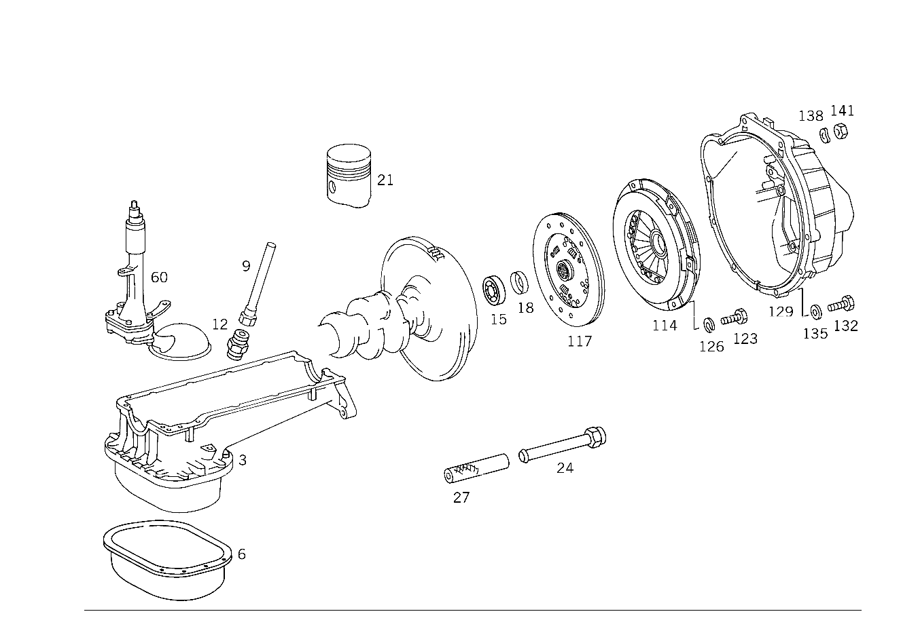

| № | Артикул | Название | Кол. | Примечание | Ограничение |
|---|---|---|---|---|---|
| 3 | A 130 010 19 13 | МАСЛЯНЫЙ КАРТЕР | 1 | Z 12.363/01 | |
| 6 | A 130 010 00 28 | - МАСЛЯНЫЙ КАРТЕР | 1 | НИЖНЯЯ ДЕТАЛЬ Z 12.363/01 | |
| 9 | A 130 018 03 16 | НАПРАВЛ. ТРУБКА | 1 | Z 12.363/01 | |
| 12 | A 130 997 01 72 | ШТУЦЕР | 1 | Z 12.363/01 | |
| 15 | N 000625 036003 | Шарикоподшипник | - | Z 12.363/01 | |
| 15 | A 008 981 34 25 | ШАРИКОПОДШИПНИК | 1 | TO CRANKSHAFT Z 12.363/01 | |
| 18 | A 130 031 00 33 | ЗАМОЧНОЕ КОЛЬЦО | 1 | Z 12.363/01 | |
| 21 | A 130 030 10 18 | ПОРШЕНЬ | 6 | Z 12.363/01 | |
| 24 | A 130 070 04 32 | ПРОВОД | 1 | Z 12.363/01 | |
| 27 | A 110 476 03 26 | ШЛАНГ | - | Z 12.363/01 | |
| 27 | A 114 997 18 82 | ШЛАНГ | 1 | *** 130 MM; 13.3X3 MM Z 12.363/01 [404] ЗАКАЗЫВАТЬ ПОГОННЫМИ МЕТРАМИ [001] ЗАКАЗЫВАТЬ ПОГОННЫМИ МЕТРАМИ | |
| 30 | A 009 094 33 02 | ВОЗДУШНЫЙ ФИЛЬТР | 1 | Z 12.363/01 | |
| 33 | A 000 094 14 71 | - БОЛТ | 2 | Z 12.363/01 | |
| 36 | A 001 990 50 51 | - ГАЙКА | 2 | Z 12.363/01 | |
| 39 | A 001 094 04 80 | - ПРОКЛАДКА УПЛОТНИТЕЛЬНАЯ | - | Z 12.363/01 | |
| 39 | A 001 094 23 80 | - ПРОКЛАДКА УПЛОТНИТЕЛЬНАЯ | 1 | Z 12.363/01 | |
| 42 | A 000 094 13 55 | - Крышка | 6 | Z 12.363/01 | |
| 45 | A 001 094 70 04 | - ЭЛЕМЕНТ ФИЛЬТРУЮЩИЙ | 1 | Z 12.363/01 | |
| 48 | A 000 094 04 64 | - РЕГУЛЯТОР | 1 | Z 12.363/01 | |
| 51 | A 001 990 19 91 | - ГАЙКОДЕРЖАТЕЛЬ | 1 | Z 12.363/01 | |
| 54 | N 000439 008211 | - Гайка | - | Z 12.363/01 | |
| 54 | N 304035 008001 | - Шестигранная гайка | 1 | M8 Z 12.363/01 | |
| 57 | A 000 094 01 25 | - СТРЕМЯНКА РЕССОРЫ | 1 | Z 12.363/01 | |
| 60 | A 130 180 13 01 | МАСЛЯНЫЙ НАСОС | 1 | Z 12.363/01 | |
| 63 | A 002 184 92 01 | МАСЛЯН. ФИЛЬТР | 1 | Z 12.363/01 | |
| 66 | A 130 997 02 72 | ШТУЦЕР | 2 | Z 12.363/01 | |
| 69 | N 007603 018100 | Уплотнительное кольцо | 2 | Z 12.363/01 | |
| 72 | A 130 180 09 27 | МАСЛОПРОВОД | 1 | ОТ МАСЛ. ФИЛЬТРА К МАСЛ.РАДИАТОРУ СНИЗУ Z 12.363/01 | |
| 75 | A 114 187 10 82 | ШЛАНГ | 2 | ОТ МАСЛ. ФИЛЬТРА К МАСЛ.РАДИАТОРУ СВЕРХУ Z 12.363/01 | |
| 78 | A 130 180 10 27 | МАСЛОПРОВОД | 1 | МАСЛЯН. ФИЛЬТР Z 12.363/01 | |
| 81 | A 130 187 03 40 | ДЕРЖАТЕЛЬ | 1 | КРОНШТ. ДВИГ. СЛЕВА Z 12.363/01 | |
| 81 | A 130 187 04 40 | ДЕРЖАТЕЛЬ | 1 | КРОНШТ. ДВИГ. СЛЕВА Z 12.363/01 | |
| 84 | A 198 995 01 01 | хомут | 2 | МАСЛОПРОВОД Z 12.363/01 | |
| 87 | N 000933 008131 | Винт | - | Z 12.363/01 | |
| 87 | N 304017 008016 | Винт с 6-гранной головкой | 2 | МАСЛОПРОВОД; M8X16 Z 12.363/01 | |
| 90 | N 000137 008204 | Пружинная шайба | - | Z 12.363/01 | |
| 90 | N 000137 008212 | Пружинная шайба | 2 | МАСЛОПРОВОД Z 12.363/01 | |
| 93 | A 130 188 00 01 | МАСЛ. РАДИАТОР | 1 | Z 12.363/01 | |
| 96 | N 915017 012200 | Гайка | 2 | Z 12.363/01 | |
| 99 | N 915003 010201 | Шариковая втулка | 2 | Z 12.363/01 | |
| 102 | N 915008 010402 | ШТУЦЕР | 2 | Z 12.363/01 | |
| 105 | A 130 223 04 04 | КРОНШТЕЙН ОПОРЫ ДВИГАТЕЛЯ | 1 | СЛЕВА Z 12.363/01 | |
| 105 | A 130 223 05 04 | КРОНШТЕЙН ОПОРЫ ДВИГАТЕЛЯ | 1 | СПРАВА Z 12.363/01 | |
| 108 | A 107 241 03 13 | САЙЛЕНТ-БЛОК | - | Z 12.363/01 | |
| 108 | A 107 241 09 13 | Опора двигателя | 2 | Z 12.363/01 | |
| 111 | A 114 241 02 84 | Металлическая прокладка | 2 | Z 12.363/01 | |
| 114 | A 001 250 41 04 | ДИСК НАЖИМНОЙ | - | Z 12.363/01 | |
| 114 | A 004 250 19 04 | Нажимной диск сцепления | 1 | Z 12.363/01 [697] ДЕТАЛЬ ПОСТАВЛЯЕТСЯ ТОЛЬКО/ИЛИ ТАКЖЕ КАК ЗАП.ЧАСТЬ | |
| 117 | A 003 250 35 03 | ДИСК СЦЕПЛЕНИЯ | - | Z 12.363/01 | |
| 117 | A 004 250 17 03 | ДИСК СЦЕПЛЕНИЯ | - | Z 12.363/01 | |
| 117 | A 010 250 26 03 | Ведомый диск сцепления | 1 | Z 12.363/01 [697] ДЕТАЛЬ ПОСТАВЛЯЕТСЯ ТОЛЬКО/ИЛИ ТАКЖЕ КАК ЗАП.ЧАСТЬ | |
| 123 | N 000933 008153 | Винт | - | M8X25\-8.8 Z 12.363/01 | |
| 123 | N 304017 008034 | Винт с 6-гранной головкой | 6 | НАЖИМН. ДИСК НА МАХОВИКЕ; M8X25 Z 12.363/01 | |
| 126 | N 912004 008102 | Пружинное кольцо | 6 | Z 12.363/01 | |
| 129 | A 115 251 25 01 | КАРТЕР СЦЕПЛ. | 1 | Z 12.363/01 | |
| 132 | N 000931 010268 | Винт | - | Z 12.363/01 | |
| 132 | N 304017 010050 | Винт с 6-гранной головкой | 7 | Z 12.363/01 | |
| 135 | N 000125 010518 | Шайба | - | Z 12.363/01 | |
| 135 | N 000125 010532 | Шайба | 7 | Z 12.363/01 | |
| 138 | N 000137 010201 | Пружинная шайба | 3 | Z 12.363/01 | |
| 141 | N 000934 010009 | Гайка | - | Z 12.363/01 | |
| 141 | N 304032 010002 | Шестигранная гайка | 3 | M10 Z 12.363/01 | |
| 150 | A 000 546 79 40 | Штекерная втулка | 1 | 1.0\-2.5 MM2 FF6.3 Z 12.363/01 | |
| 150 | A 000 546 78 40 | Штекерная втулка | 2 | Z 12.363/01 | |
| 156 | A 000 546 45 40 | ШТЕК. ГНЕЗДО | 2 | ОБОГРЕВ КАРБЮРАТ. Z 12.363/01 | |
| 159 | A 000 542 58 19 | Контактор | 1 | CARBURETOR HEATER\-PLUG\-SOCKET, REAR Z 12.363/01 | |
| 162 | A 002 545 51 28 | ШТЕКЕР | - | Z 12.363/01 | |
| 162 | A 004 545 86 28 | Штекер | - | Z 12.363/01 | |
| 162 | A 007 545 00 28 | КОРПУС ШТЕК. ГНЕЗДА | - | Z 12.363/01 | |
| 162 | A 015 545 49 28 | КОРПУС ШТЕК. ГНЕЗДА | 1 | РЕЛЕ; 4\-PIN Z 12.363/01 | |
| 162 | A 014 545 85 28 | КОРПУС ШТЕК. ГНЕЗДА | 1 | РЕЛЕ Z 12.363/01 [402] БОЛЬШЕ НЕ ПОСТАВЛЯЕТСЯ | |
| 165 | A 002 545 85 28 | ШТЕКЕР | 1 | AT 65\-DEG. THERMOSWITCH Z 12.363/01 | |
| A 114 586 00 25 | РЕМКОМПЛЕКТ | 1 | НАКЛАДКА СЦЕПЛ. ФРИКЦ. Z 12.363/01 [402] БОЛЬШЕ НЕ ПОСТАВЛЯЕТСЯ | ||
| A 116 411 01 15 | ДИСК ШАРНИРА | - | Z 12.363/01 | ||
| A 116 411 02 15 | Эластичная муфта | 1 | Z 12.363/01 [417] БОЛЬШЕ НЕ ПОСТАВЛЯЕТСЯ, ЗАКАЗЫВАТЬ КОМПЛЕКТ ПОСТАВКИ | ||
| A 005 545 02 28 | Сцепление, механическое | 1 | ГЕНЕРАТОР; 3\-PIN Z 12.363/01 |
Позиций: 76 · подписано на схемах: 72 · колесо — плавный зум в курсор, перетаскивание — пан, двойной клик — зум, клик по артикулу — скопировать.